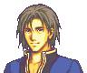

Support Rank C

！!

この距離で気付くとは
かなりスジがいいなNoticing me at this distance—quite the sharp instincts.
・・・『剣聖』カレル...'Sword Saint' Karel.
ほう 光栄だ
わたしを知っているのかい？Ho, I'm honored. So you know of me?
・・・剣をつかう者で...Anyone who wields a sword—
あんたのことを知らない者など
いない・・・there's no one who doesn't know your name...
若い頃は 各地を渡り歩いたからねIn my younger days, I traveled all over, after all.
・・・どうして
軍にいる？...Why are you with this army?
身内が世話になっててねA relative of mine is being looked after here.
このおいぼれの剣でも
役に立てばと きてみたんだがI thought even this old sword of mine might be of some use, so I came to see.
おいぼれ？
あんたでも冗談を言うのかOld? Even you make jokes?
いや 真実だよ
君のような若い者にはNo, it's the truth. Against someone young like you—
とてもじゃないが
かなわないI wouldn't stand a chance, not even close.
・・・・・・.......
・・・悪くない...Not bad.
久しぶりに面白そうだIt's been a while since something looked this interesting.
Support Rank B
君 ちょっと待ってくれYou, wait a moment.
・・・何の用だ？...What do you want?
剣の相手をさがしているのだが
良かったら相手をしないか？I'm looking for someone to cross swords with. If you don't mind, would you spar with me?
・・・断る...I refuse.
なぜだい？ わたしは
相手として不足かい？Why is that? Am I not a worthy enough opponent?
あんたの剣は
人を倒す剣じゃない・・・Your sword isn't a sword meant to cut people down...
俺が目指すものとは
しょせん相容れないIt has nothing in common with what I'm aiming for, in the end.
今はそう思うかもしれないが
どちらも同じ 剣の道・・・You may think so now, but both are the same Way of the Sword...
行き着く先は
たった一つだけだよThere's only one destination they lead to.
・・・・・・.......
Support Rank A
・・・何か わたしに用かな？
ルトガー...Do you need something from me, Rutger?
聞きたいことがあるThere's something I want to ask.
なんだね？What is it?
あんたの剣には殺気がない
風をなぎ 気と調和する・・・Your sword carries no killing intent. It parts the wind, in harmony with the ki...
どんな剛の剣も
あんたの敵にならないNo sword of raw strength could ever be your match.
俺はもっと強くなりたい
何者にも負けぬ剣・・・I want to become stronger — a sword that loses to no one...
剣の道がひとつなら
俺も そうなれるというのか？If the Way of the Sword is just one path, does that mean I could become like that too?
・・・君は
サカの出身だね？...You're from Sacae, aren't you?
・・・そうだ...That's right.
私もサカで生まれたI too was born in Sacae.
父なる空の声を聞き
母なる大地に育てられたI listened to the voice of the father sky, and was raised by the mother earth.
私の剣にあるのは
それだけだThat's all there is to my sword.
俺は純粋なサカの民じゃないI'm not a pure-blooded Sacaen.
あんたのように
感じることはできない・・・I can't feel things the way you do...
昔もそうだったのかい？Was it the same for you, long ago?
！！!!
君には聞こえていたはずだよYou should have been able to hear it back then.
今は憎しみにとらわれて
耳に入らないようだけどねIt seems it just doesn't reach your ears now, caught up in hatred as you are.
・・・この戦いが終わったら
また 聞こえるだろうか？...Once this war is over, will I be able to hear it again?
きっと聞こえるさI'm sure you will.
・・・草原を渡る風は...The wind that crosses the plains—
一度愛した者を
見放しはしないからね—never abandons someone it once loved.